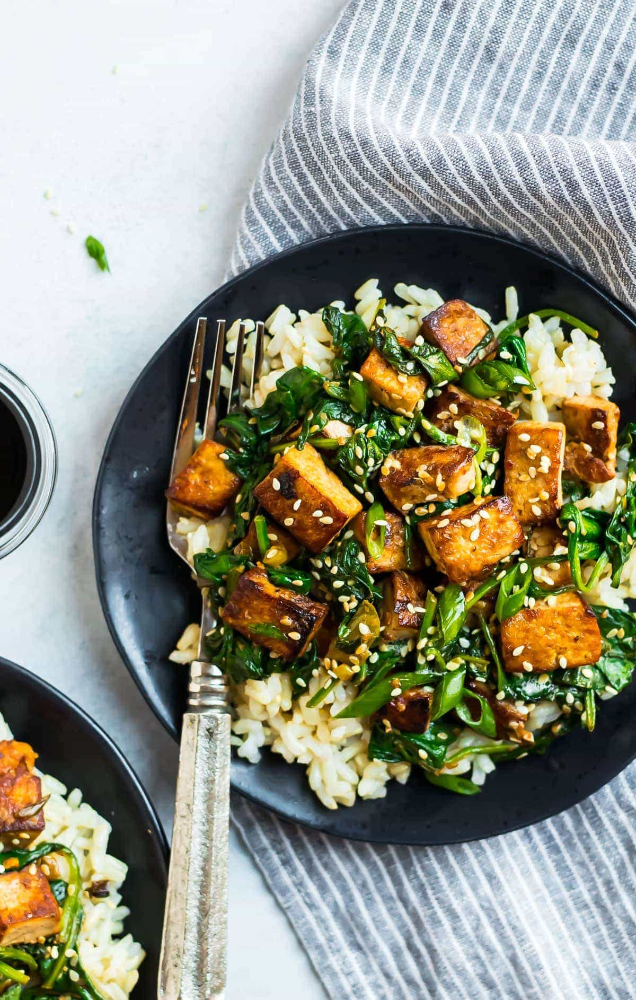

VEGETABLE STIR-FRY WITH TOFU

Description
This Vegetable Stir-Fry with Tofu is a quick, healthy, and flavorful dish perfect for a weeknight meal.
It features crispy tofu cubes sautéed with a colorful array of vegetables such as bell peppers, broccoli, and carrots.
The stir-fry is tossed in a savory sauce made from soy sauce, garlic, ginger, and a hint of sesame oil.
Served over steamed rice or noodles, this dish is a satisfying way to enjoy a variety of fresh vegetables.
It's not only delicious but also packed with nutrients and protein from the tofu.
Ingredients
- 1 block (14 oz) firm tofu, drained and cubed
- 2 tablespoons soy sauce
- 1 tablespoon sesame oil
- 2 tablespoons vegetable oil
- 1 clove garlic, minced
- 1 teaspoon ginger, grated
- 1 red bell pepper, sliced
- 1 yellow bell pepper, sliced
- 1 cup broccoli florets
- 1 carrot, julienned
- 1/4 cup soy sauce
- 1 tablespoon oyster sauce (optional)
- 1 tablespoon cornstarch mixed with 2 tablespoons water (for thickening the sauce)
- Sliced green onions, for garnish
- Sesame seeds, for garnish
- Steamed rice or noodles, for serving
Steps
- Prepare the Tofu: Drain the tofu and press it to remove excess moisture. Cut the tofu into 1-inch cubes.
- Marinate the Tofu: In a bowl, toss the tofu cubes with 2 tablespoons of soy sauce and 1 tablespoon of sesame oil. Let it marinate for 15-20 minutes.
- Cook the Tofu: Heat 1 tablespoon of vegetable oil in a skillet over medium-high heat. Add the marinated tofu and cook until golden and crispy on all sides. Remove from the skillet and set aside.
- Cook the Vegetables: In the same skillet, add the remaining tablespoon of vegetable oil. Add the minced garlic and grated ginger, and sauté for 1 minute until fragrant. Add the sliced bell peppers, broccoli, and carrots, and stir-fry for 4-5 minutes until the vegetables are tender but still crisp.
- Make the Sauce: In a small bowl, mix 1/4 cup soy sauce, 1 tablespoon oyster sauce (if using), and the cornstarch mixture. Pour the sauce over the vegetables and cook for 2-3 minutes until the sauce thickens.
- Combine Tofu and Vegetables: Add the cooked tofu back to the skillet and toss everything together until the tofu is well-coated with the sauce.
- Serve: Divide the stir-fry among serving plates and garnish with sliced green onions and sesame seeds. Serve hot over steamed rice or noodles.